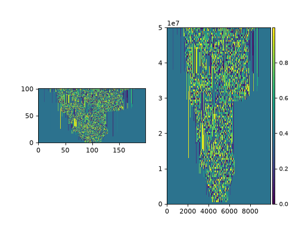
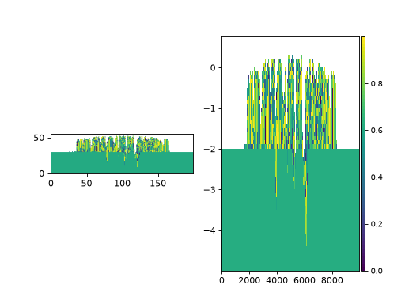
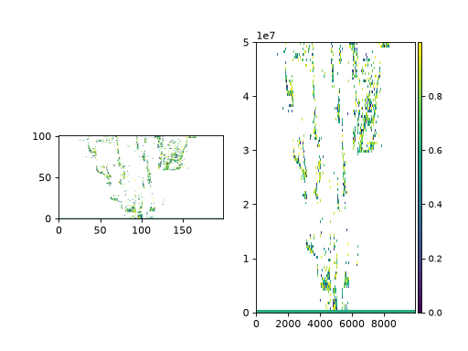

Registering Custom Variables to Cubes¶
This example demonstrates how to generate a custom variable, register it to a
DataCube in sandplover, and compute derived
variables directly on a StratigraphyCube.
During analyses, it is very common to derive custom data variables. For example, grain-size estimates, synthetic tracer concentrations, or any other variable you may imagine!
To seamlessly use sandplover built-in tools (such as Section slicing,
stratigraphy mapping, and visualization tools), you can register these
derived variables directly to a DataCube or a
StratigraphyCube.
Once registered, custom variables can be sliced using sandplover.section
objects (e.g., StrikeSection or
DipSection) just like any native data variable.
Spacetime data that are registered to a DataCube can be used in further spatiotemporal analyses, sliced along a section, or mapped to stratigraphy for additional analyses in that domain. Stratigraphic data can be registered to a StratigraphyCube and used in any additional stratigraphic analyses.
Important
Data must match the shape of the Cube to which you are attempting to register.
import numpy as np
import matplotlib.pyplot as plt
import xarray as xr
import sandplover as spl
# Load sample data and instantiate Cubes
test_data = spl.sample_data.golf() # DataCube
test_strat = spl.cube.StratigraphyCube.from_DataCube(test_data, dz=0.1) # StratigraphyCube
# Create a synthetic 3D variable
new_variable = xr.zeros_like(test_data["eta"])
for t in np.arange(test_data.shape[0]):
new_variable[t] = np.mod(
np.sin(np.asarray(test_data["eta"][t]) * 12345.6789) * 43758.5453, 1
)
# Register the new variable to the DataCube
test_data.register_variable("new_var", new_variable)
This variable can now be sliced manually, like any other variable of the DataCube, or can be sliced with a Section object.
# make a strike section
strike_data = spl.section.StrikeSection(test_data, distance_idx=20)
fig, ax = plt.subplots(1, 2)
ax[0].imshow(test_data["new_var"][:, 20, :], origin="lower")
strike_data.show("new_var", ax=ax[1])
plt.show()
(Source code, png, hires.png)
{kind=link}
{kind=link}

Similarly, we can register a variable to a StratigraphyCube, making sure that the new data are the correct shape!
# Register the square root of the variable directly to the StratigraphyCube
test_strat.register_variable("sqrt_new_var", np.sqrt(test_strat["new_var"]))
# make a strike section
strike_strat = spl.section.StrikeSection(test_strat, distance_idx=20)
fig, ax = plt.subplots(1, 2)
ax[0].imshow(test_strat["sqrt_new_var"][:, 20, :], origin="lower")
strike_strat.show("sqrt_new_var", ax=ax[1])
plt.show()
(Source code, png, hires.png)
{kind=link}
{kind=link}

Note that, because the StratigraphyCube shares a DataIO layer with the DataCube, the former can also access new_var. But, because the shape would be incorrect for the DataCube, and we don’t have complete spacetime information available, trying to access the sqrt_new_var variable of the DataCube results in an error! (See advanced usage below.)
test_strat["new_var"] # this works
test_data["sqrt_new_var"] # this does not work
Advanced usage¶
We don’t recommend it (see below), but if you completely insist on getting spacetime-shaped data for a variable that is registered to a StratigraphyCube, you can manually synthesize a DataArray using the method below:
# preallocate an array and then populate with stratigraphic data
sqrt_new_var_spacetime = xr.full_like(test_data["eta"], np.nan)
sqrt_new_var_spacetime.data[
test_strat.data_coords[:, 0],
test_strat.data_coords[:, 1],
test_strat.data_coords[:, 2],
] = test_strat.dataio["sqrt_new_var"].data[
test_strat.strata_coords[:, 0],
test_strat.strata_coords[:, 1],
test_strat.strata_coords[:, 2],
]
You can even register this new spacetime data to the DataCube and slice / section it:
test_data.register_variable("sqrt_new_var_spacetime", sqrt_new_var_spacetime)
fig, ax = plt.subplots(1, 2)
ax[0].imshow(sqrt_new_var_spacetime[:, 20, :], origin="lower")
strike_data.show("sqrt_new_var_spacetime", ax=ax[1])
plt.show()
(Source code, png, hires.png)
{kind=link}
{kind=link}

Hint
Make sure to register the spacetime variable under a new name, because the Cube`s share an underlying `DataIO!
Whenever possible, we recommend avoiding this method. Instead, try to calculate the derived variable directly on spacetime data, then register that data to the DataCube, and then access via a derived StratigraphyCube as needed.